Controller
An iX panel can be connected to many types of automation equipment, such as PLCs, servos, and drives.
The expression controller is used as a general term for the connected equipment. It is possible to connect a tag to more than one controller simultaneously.
This makes it possible to use the same application with different controllers. Controllers can be enabled and disabled in runtime. A project can contain multiple controller connections.
A project can also be connected to an external OPC server.
Related information |
|---|
Adding a Controller
When a new project is created, one of the steps is to choose which controller brand and model to connect to. Clicking on Tags in the Project Explorer, selecting the Controller tab displays the Controller configuration page.
| 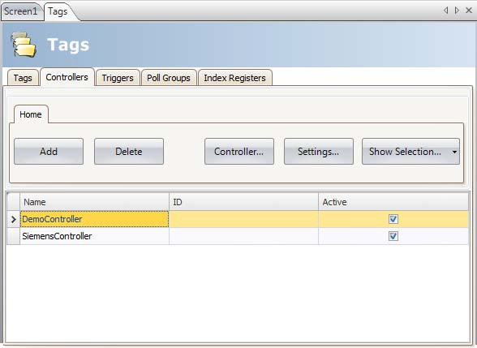 |
Parameter | Description |
|---|---|
Name | Symbolic name. The name can be any alphanumeric string, beginning with a letter (a-z, A-Z). |
ID | Optional short name for controller; displayed in functions such as Data exchange. |
Active | Selection of which controllers are to be active in runtime. Change of active controllers can also be performed in runtime using an action or script. |
Controllers are added and deleted using the Add and Delete buttons.
Clicking Controller allows selecting another controller, and Settings displays settings for the selected driver.
Clicking Help in the driver settings dialog opens the help file for the driver.
Related information |
|---|
Notify Window
If a communication error between the application and the controller is detected in runtime, this will result in a communication error, and a Notify Window will be displayed in the HMI panel. The Notify Window is a floating window that starts in the upper left corner of the screen. It is also used to display the alarm indicator.
The Notify Window can be moved to any position on the current screen.
DEMO Controller
The DEMO controller is used and selected in the same way as a regular controller driver, to design and test a project directly on the development PC without connection to an external controller.
A number of predefined tags can be selected:
Data type | Tag ID | Description |
|---|---|---|
BIT, BOOL | M0 - M99 | Digital tags |
INT16, UINT16 | D0 - D99 | Analog tags |
The DEMO controller also includes counters and digital tags with predefined functions:
Data type | Tag ID | Description |
|---|---|---|
BIT | M100 - M104 | Toggles OFF and ON every 1,000 ms |
INT16 | C0 - C4 | Counts from 0 to 100 with 1,000 ms interval by default; min/max values can be defined |
External OPC Server
OPC is an industrial standard created in a collaboration of automation hardware and software suppliers. The standard defines methods for exchanging real-time automation data between PC-based clients using Microsoft operating systems.
An OPC server acts as a controller towards an HMI panel.
OPC Classic Client
To update settings for the OPC Classic client, do the following:
Select the Choose Controller dialog.
Select Localhost, when accessing an OPC server running in your local PC or Remote Server when accessing an OPC server in the network environment, and click Browse to select the OPC server.
Click the small arrow at the right-hand side of the Add button on the Tags tab to add OPC server tags.
| 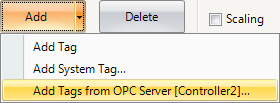 |
Use the Refresh button to make it possible to select the OPC server from the OPC Server drop-down list next time.
To validate tags from a remote OPC server in the iX Developer project, return to the Controllers tab and select the remote OPC server once more, and click OK.
This procedure is necessary as the tags in the remote OPC server may have been changed since they were selected on the Tags tab.
OPC UA Client
Settings for the OPC UA client can be made in the Choose Controller dialog. Open the dialog by clicking the Add button on the Controllers tab.
Enter the URL to the OPC UA server.
Controller Settings Dialog
The settings dialog for the OPC UA Server is available by clicking the Settings button on the Controllers tab.
| 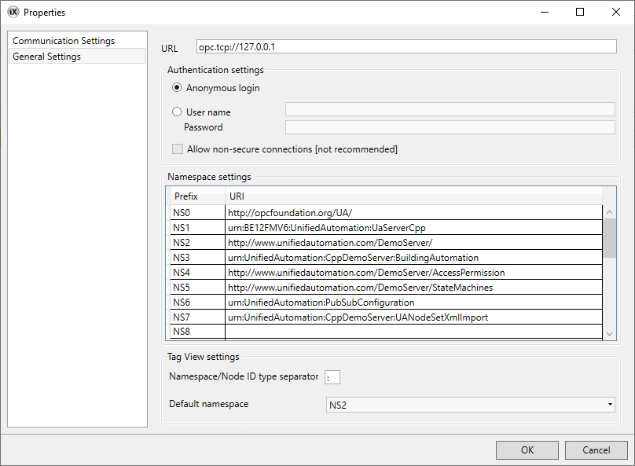 |
| 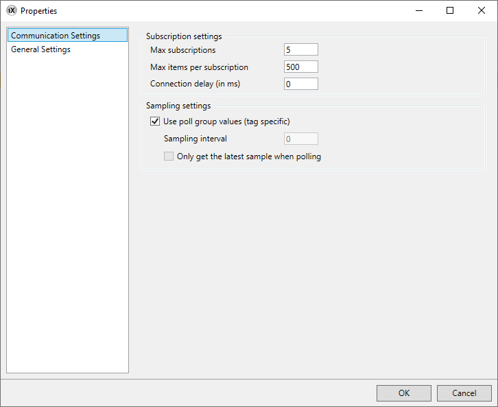 |
Parameter | Description | ||||||||||||||||||||||||||||||||||||||||||||||||
|---|---|---|---|---|---|---|---|---|---|---|---|---|---|---|---|---|---|---|---|---|---|---|---|---|---|---|---|---|---|---|---|---|---|---|---|---|---|---|---|---|---|---|---|---|---|---|---|---|---|
URL | Enter URL to the OPC UA server. Only UA TCP Binary is supported which means the URL must start with “opc.tcp://”. | ||||||||||||||||||||||||||||||||||||||||||||||||
Authentication settings | Choose whether to use anonymous login or enter a user name and password to enable a secured login. | ||||||||||||||||||||||||||||||||||||||||||||||||
Namespace settings | This setting offers a possibility to declare a namespace URI and bind it to a prefix. | ||||||||||||||||||||||||||||||||||||||||||||||||
Tag View settings | Namespace separator character: Enter a character to be used to separate the namespace URI prefix from the tag ID when presented on the tag tab. | ||||||||||||||||||||||||||||||||||||||||||||||||
Default namespace: Select the default namespace URI prefix to be used when entering a tag on the tag tab. | |||||||||||||||||||||||||||||||||||||||||||||||||
Subscription settings[a] | Max subscriptions: Enter the maximum number of subscriptions supported by the server.[b] | ||||||||||||||||||||||||||||||||||||||||||||||||
Max items per subscription: Enter the maximum number of items per subscription supported by the server.[b] | |||||||||||||||||||||||||||||||||||||||||||||||||
Connection delay (in ms): The time in milliseconds the application will wait before connecting to the OPC UA server after the application has started.[c] | |||||||||||||||||||||||||||||||||||||||||||||||||
Sampling settings | Use poll group values: If selected, the tags in the controller will have their sampling intervals based on their poll group values.[d] | ||||||||||||||||||||||||||||||||||||||||||||||||
Sampling interval: The rate at which the server checks the data source for changes.[d] | |||||||||||||||||||||||||||||||||||||||||||||||||
Only get the latest sampling interval when polling: If the sampling interval is faster than the publishing interval, a queue of values may form in the server. When this box is checked, this queue will never contain more than the latest value. If unchecked, the queue size will be automatically calculated as the ratio of publishing interval to sampling interval, rounded up, so that all the samples will be included in the published notification. | |||||||||||||||||||||||||||||||||||||||||||||||||
[a] The concept behind the parameters is to allow for optimization of performance. However beware that how the server handles the parameters will vary from server to server. [b] Please refer to the server manual for limitations. [c] The intended use for this option is to create staggered connections between clients so not all clients attempt to connect simultaneously to the server. [d] Ultimately, the server will set this value based on it’s MinSupportedSampleRate and it’s AvailableSamplingRates. The final value will never be lower than the min. supported sample rate, and also, the available sampling rate closest to the desired value will be chosen. | |||||||||||||||||||||||||||||||||||||||||||||||||
Note
When option user name and password is chosen in the Authentication settings it will also be possible to make a secondary choice, Allow non-secure connections. This option should be used with great caution and only when a connection is made to an OPC UA server that is based on 2.40 SP4 or older version.
See warning message below.
Add Tags from OPC UA Server
You can add tags from OPC UA Server in three different ways. Option 1, do the following:
Click Tags - Add to add tags from OPC UA server.
Enter the BrowseName along with the preferred namespace URI prefix, defined in the controller settings dialog. Make sure to separate the values with the separator character.
Example:
“NS3:tag”
If no namespace URI prefix is entered, the default namespace URI prefix as defined in the controller settings dialog will be used.
| 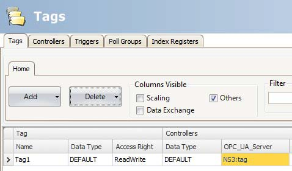 |
Option 2, do the following:
Click Tags - Add to add tags from OPC UA server.
Enter the information in the following order: asterisk (*) – namespace URI prefix – separator – NodeId IdentifierType – separator – NodeId identifier.
Example:
*NS3:Numeric:42949672
*NS3:String:Tag1
| 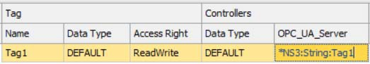 |
Option 3, do the following:
Click Tags - Add - Add Tags from OPC Server [Controller1]... to add tags from OPC server.
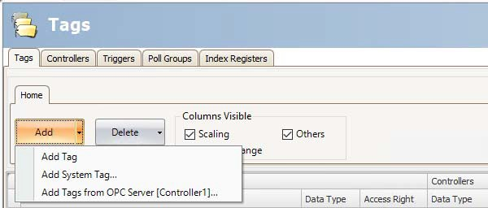Browse OPC Server dialog, select tags and click OK.
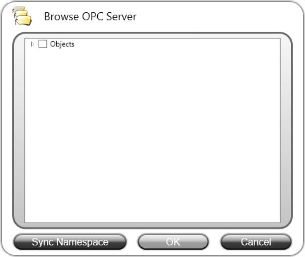
Note
Array tags are not supported by OPC UA controllers.
The button Sync Namespace can be used to import/sync namespace settings without importing any tags.
Supported Functions
Data Access (UA part 8) is supported. Read/write of objects, structures and arrays is not supported.
Limitations
Limitation | Description |
|---|---|
Address input in GUI | When using NameSpace and BrowseName to identify a variable in the server, this combination must be unique. Otherwise, the client cannot identify the variable. This is not a problem when connecting to an iX Developer server, since all tag names (variables) are unique. In those situations, NodeId Identifier can be used for identification. |
NodeId Identifier type | Supported NodeId Identifier types are Numeric and String. Nodes with unsupported types, such as Guid and Opaque, will be skipped during import. |
Tags with dynamic data type | OPC UA controller does not support tags with dynamic data types. This can lead to unexpected values during runtime. |
Related information |
|---|
OPC UA Structured Tags
OPC UA Structured Tags are disabled by default for the project.
Activating the feature
To activate the OPC UA Structured Tags functionality, go to Project - Settings - Advanced.
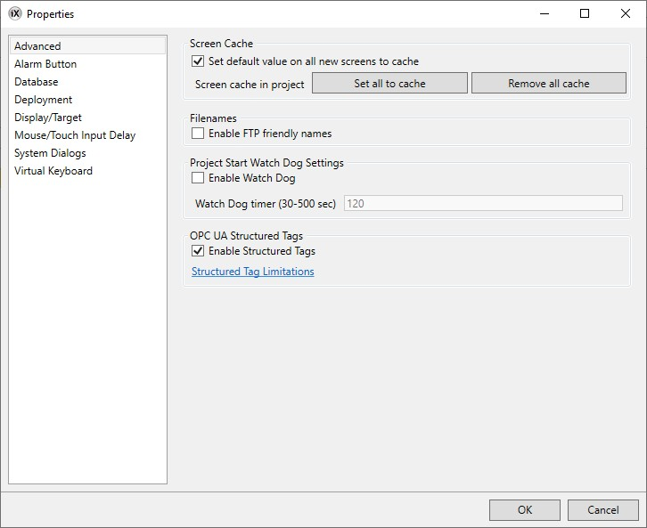When the feature is active, two new tabs (Structured Tags / Structured Types) will appear in the Tags editor.
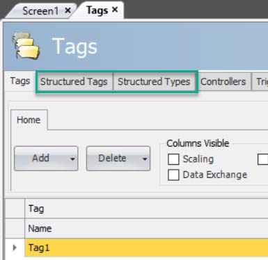
Note
Read the Limitations before enabling structured tags.
Importing Structured Tags
Structured tags are added in the same way as other OPC UA tags. If one or more tree structures are selected in the browse dialog, the imported structure will end up in the Structured Tags tab. If only leaf nodes are selected however, they will be handled as if Structured Tags were not active, and end up in a flat list under the Tags tab.
Click Tags - Add - AddTags from OPC Server [Controller name]... to add tags from OPC server.
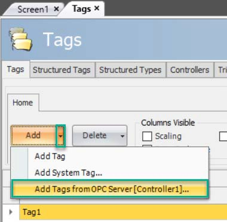Browse OPC Server dialog, select a tree stucture or leaf nodes and click OK.

The nodes of imported structured tags can be accessed from tag lists in the same way as other tags. Filtering is also possible.
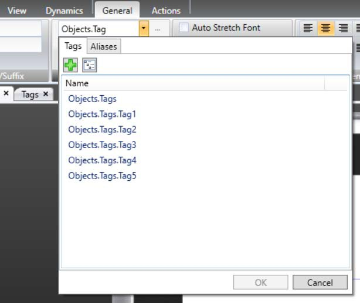
Note
Information about skipped nodes and other issues during import will be displayed in the Output window. The Output window should be enabled before import.
Synchronizing Structured Tags
A project is not static, and nodes in the server can be renamed, added, moved, or removed. The synchronization functionality (see picture below) can be used to synchronize the content of the structured tags with the corresponding content of the server.
| 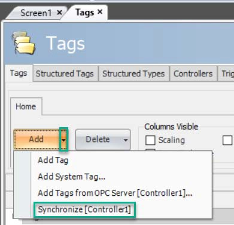 |
Note
Only already imported structured tags are updated with this functionality.
If tags connected to objects are renamed through synchronization, those tag connections will be lost (name of tag reference will not be updated).
Structured Types Tab
Under the Structured Types tab, it is possible to get some more details about the nodes contained in the imported structures.
Disabling the Feature
If the OPC UA Structured Tags functionality is disabled, the tabs Structured Tags and Structured Types will be removed, and all imported structured tags will be permanently deleted.
Limitations
Limitation | Description |
|---|---|
Structured Tags | Limitations and known issues connected to the StructuredTags feature can be found under Project - Settings - Advanced (see following image). |
| 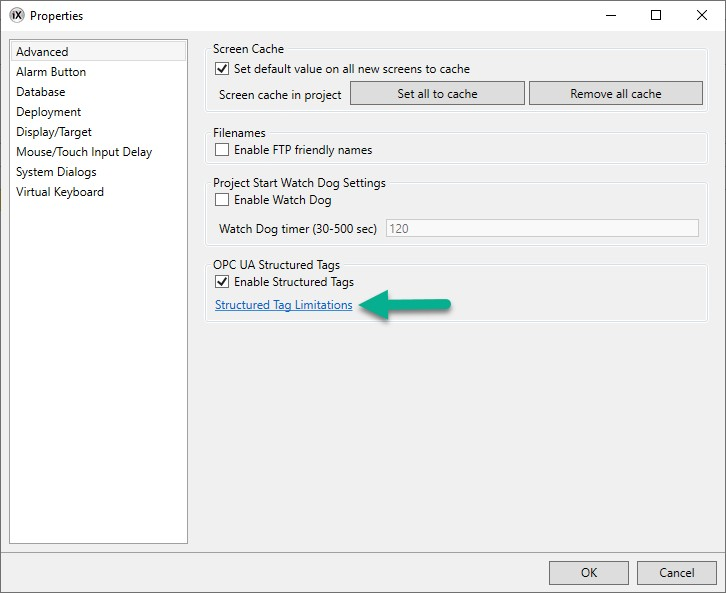 |
Related information |
|---|
Updating Drivers
Note
Run as Administrator for iX Developer when downloading or updating drivers. Administrator user rights are needed since files in the Program Files folder are changed.
Drivers can be updated via Internet or from file.
Each driver takes up approximately 3.0 MB. To use the downloaded drivers, iX Developer must be restarted.
Updating Drivers from Internet
A web browser is not required to update drivers via an Internet connection. A list of drivers that can be downloaded via Internet is displayed when the connection is established.
In the File menu, click Update Drivers and select Update Drivers From Internet to update available drivers to the latest version, or to install new drivers.

The list shows the version number for the available drivers and the version number for the installed drivers.
Select the driver(s) to install in iX Developer.
The command Mark Newer selects all drivers available in newer versions than the ones installed, including all drivers that are not installed.
Click Download.
Related information |
|---|
Updating Drivers from File
When updating drivers from file only one driver at the time is updated. This can for example be used to revert to an older driver.
To install a new driver from file:
Click on the top left button and select Update Drivers/From File to update available drivers to the latest version.
Browse to the folder where the driver files are located. A list of all drivers that can be installed is now shown.
Select the driver to install in iX Developer.
Mark Newer selects the driver when there is a newer version than the currently installed.
Click Install.
Run as Administrator when restarting the iX Developer.
Related information |
|---|
Synchronizing the Controller Clock
In order to synchronize the controller clock with the iX Developer project, the system tags hour, minute, second, need to be added to the project from the Tags configuration page. These are then connected to addresses in the controller.
| 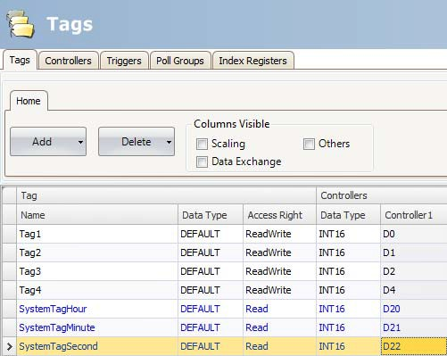 |
When the value is changed in any of the system tags, they will be written to the controller.
Related information |
|---|